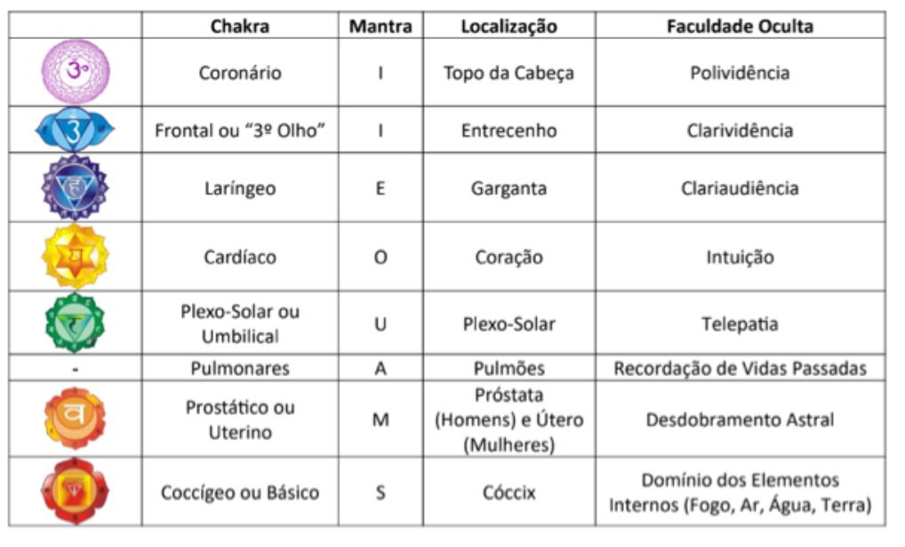

Recomendações práticas para autoconhecimento

Comece pelo topo
Chakra Coronário (I) - Desça gradualmente até a base
-
Sílaba: I
Foco: Conexão espiritual, expansão da consciência
Exercício: Sente-se em posição confortável, feche os olhos e repita suavemente "Iii" (como um eco suave) por 3-5 minutos, concentrando-se no topo da cabeça
Intenção: "Eu me abro para a sabedoria universal. Eu sou parte de algo maior"
-
Desça por cada chakra com
atenção
Use a sequência como uma jornada energética:
- Vá de cima para baixo, repetindo o mantra de cada chakra
- Enquanto fala o som, imagine a energia fluindo para aquela região
- Pergunte-se: "O que sinto nessa área? Tensão? Calor? Vazio?"
-
Use a respiração como
guia
-
Inspire na cor do chakra
Exale o som (ex: "A" no pulmão, "O" no coração)
Mantenha a atenção no corpo - não no pensamento
-
-
Adicione uma pergunta de
autoconhecimento por
chakra
Exemplo:
- Coronário (I): "O que eu quero entender sobre mim mesmo?"
- Cardíaco (O): "Como eu amo e me permito ser amado?"
- Plexo Solar (U): "O que me dá poder e confiança?"
-
Registre suas sensações
Anote depois:
- O que sentiu?
- Qual emoção surgiu?
- O som mudou algo?
Dica extra: Combine com uma prática de meditação silenciosa depois de 5 minutos de vocalização, sente-se em silêncio por 2-3 minutos. O silêncio amplifica o efeito
Os 8 Chakras
Percorra cada centro energético com atenção e respiração consciente
Coronário
Sílaba: I
Conexão espiritual
Frontal
Sílaba: I
Intuição, sabedoria
Laríngeo
Sílaba: E
Comunicação, verdade
Cardíaco
Sílaba: O
Amor, compaixão
Plexo Solar
Sílaba: U
Poder pessoal, confiança
Pulmonares
Sílaba: A
Vitalidade, expressão
Prostático/Uterino
Sílaba: M
Criatividade, acolhimento
Coccígeo
Sílaba: S
Segurança, ancoramento
Exercício Vocal de Autoconhecimento - 10 min
-
Posição
Sentado, costa eretas, mãos no colo ou sobre os joelhos. Olhos fechados